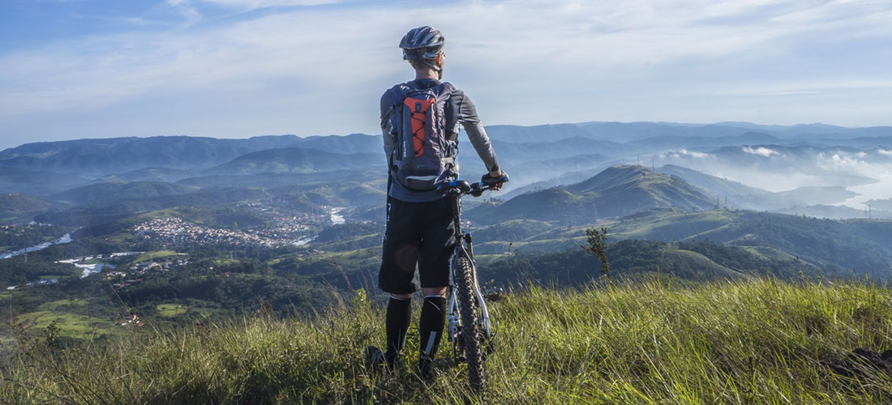

Experience Montana's Mountains
Biking Montana's mountains is a must that every biker needs to experience. The Mountain Spoke can help you get the most out of the beautiful mountains that Montana has to offer. We also are dedicated to helping you get the most out of any terrain that you decide to bike on. We have a knowledgeable staff that is ready to help you with any questions that you have about your gear or about biking. We offer tours to help you get the most out of trip.
#1 Reliable Bikes
Having a good functioning bike is essential for getting the most out of your ride. The Mountain Spoke is dedicated to provide high quality bikes that best suit your needs. We do our best to provide high quality bikes to you at the lowest price possible. Shop our amazing bikes now!
Shop Now!